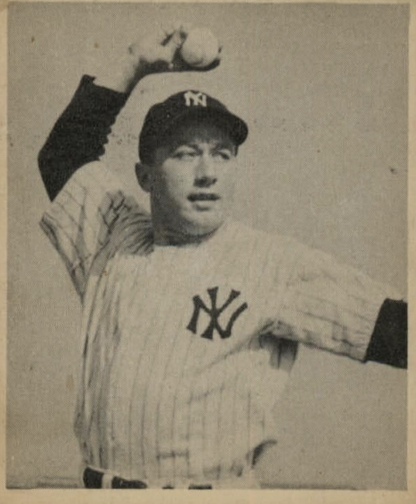

George Stirnweiss
Career Highlights & Facts
- George Stirnweiss won the American League batting title in 1945 with a .309 average, also leading the league in hits, triples, and stolen bases that season.
- In his remarkable 1945 season, he finished second in the American League Most Valuable Player (MVP) voting, just behind Detroit Tigers pitcher Hal Newhouser.
- Though primarily known as a second baseman, Stirnweiss was a versatile infielder who also played shortstop and third base, and even started his career as an outfielder.
- After his baseball career, he became a successful stockbroker. Tragically, he and his daughter died in a train collision in New Jersey in 1958, at the age of 39.
The Original Clue